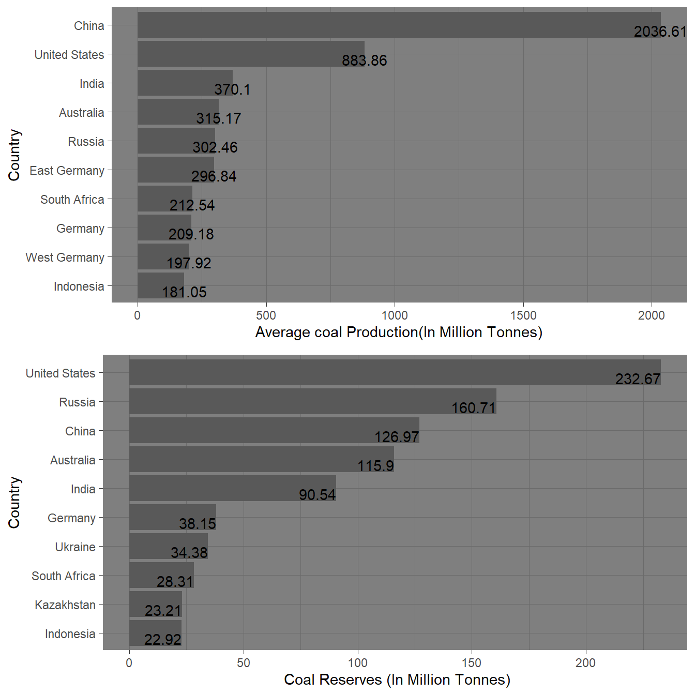

Analysis of Fossil Fuels
Aims
- To find out the top 10 producers of different fossil fuels.
- To find out which countries have the highest reserves of each of the given fossil fuels.
- Try to find that does there exist a relationship between the total reserves of the fuel and the production.
INTRODUCTION
Fossil fuels have been our main source of energy for quite a lot of time now, but with the increase in global warming, and the depletion of fossil fuels, many energy giants are shifting from fossil fuels to renewable energy sources. But, there is still a lot of time since we can rely totally on the renewable sources of energy.
In the following analysis, we’ll look at the top producers of the fossil fuels and also look at the countries which have the highest reserves of each of the fossil fuel.
It is expected that the country that has more reserves will produce more of that fossil fuel to generate maximum profit. We’ll look into this and try to analyse the factors that may affect this statement.
DATA DESCRIPTION
- The data used for this assessment is the
natural_resourcesdata that is downloaded from Our World in Data HERE - The data has 9237 observations and 45 variables.
- The dataset consists of data related to production,consumption,export,import of different types of fossil fuels. The data also consists information about the population of the countries.
- The variables of concern are as follows-
| Variable Name | Data type of the variable | Description | |
|---|---|---|---|
| A | Entity | Character | Name of the Country |
| B | Year | Numeric | Year of concern |
| C | Gas production | Numeric | Gas Production in m^3 |
| D | Coal production | Numeric | Coal production in tonnes |
| E | Oil production | Numeric | Oil production in m^3 |
| F | Gas reserves | Numeric | Total Gas Reserves |
| G | Oil Reserves | Numeric | Total Oil reserves |
| H | Coal reserves | Numeric | Total Coal reserves |
| I | Population | numeric | Population of the country |
Analysis
Top 10 oil producers of the world and their percentage with respect to the total world production
Table 1: ?(caption)
| Entity | Average oil production(in Million m^3) | Percentage |
|---|---|---|
| Russia | 494.4759 | 12.75 |
| Saudi Arabia | 474.6458 | 12.24 |
| United States | 438.5396 | 11.31 |
| Iran | 208.3237 | 5.37 |
| China | 175.5698 | 4.53 |
| Mexico | 140.6067 | 3.63 |
| Venezuela | 135.1477 | 3.49 |
| United Arab Emirates | 130.1221 | 3.36 |
| Iraq | 129.7648 | 3.35 |
| Canada | 128.0075 | 3.30 |
Top 10 Natural Gas producers of the world and their percentage with respect to the total world production
Table 2: ?(caption)
| Entity | Average gas production(in Billion m^3) | Percentage |
|---|---|---|
| Russia | 600.28 | 22.72 |
| United States | 585.40 | 22.15 |
| Canada | 146.10 | 5.53 |
| Iran | 82.63 | 3.13 |
| Netherlands | 76.53 | 2.90 |
| Algeria | 66.54 | 2.52 |
| Norway | 65.39 | 2.47 |
| United Kingdom | 61.81 | 2.34 |
| Saudi Arabia | 58.08 | 2.20 |
| Indonesia | 56.49 | 2.14 |
Top 10 Coal producers of the world and their percentage with respect to the total world production
Table 3: ?(caption)
| Entity | Average coal production(in Million Tonnes) | Percentage |
|---|---|---|
| China | 2036.6146 | 32.81 |
| United States | 883.8610 | 14.24 |
| India | 370.1000 | 5.96 |
| Australia | 315.1683 | 5.08 |
| Russia | 302.4586 | 4.87 |
| East Germany | 296.8364 | 4.78 |
| South Africa | 212.5415 | 3.42 |
| Germany | 209.1800 | 3.37 |
| West Germany | 197.9182 | 3.19 |
| Indonesia | 181.0497 | 2.92 |
Top 10 Oil Producers of the world and Top countries with most Oil Reserves

From the above graph Figure 1 it is evident that the country which has the most oil reserves has produced the most oil with some exceptions. The exception of Venezuela can be explained due to the fact that Venezuela has heavy oil which is tough to produce due to high viscosity and density. Also the political situation of Venezuela is also not favorable which makes it tougher for the foreign countries to work in Venezuela.
Whereas, Arabic countries like UAE, Iraq, Iran, Kuwait has light, sweet oil which is very easy to extract, hence eventho they have lesser reserves than Venezuela, they are producing almost the same amount of crude oil as Venezuela.
Top 10 Gas Producers of the world and Top countries with most Gas Reserves

From the above graph Figure 2 it is evident that most of the countries that have high reserves of natural gas produce more of it. The countries which don’t usually don’t have the resources to do so. Natural gas is one of the major sources of energy for many countries like USA, it is mainly used for generation of electricity and heating.
We also have to take into account the consumption and export of the natural resource into account.
Top 10 Coal Producers of the world and Top countries with most coal Reserves

From the above graph Figure 3 , it is clearly evident that the production of coal can be related to the resources available as the countries producing more coal have more proven reserves of coal.
CONCLUSION
With this blog, we were able to find the top oil Table 1, gas Table 2 and coal Table 3 producers of the world and we were also able to find that which countries have the highest proven resources of a given fossil fuel.
From the above graph of different resources, it is evident that the countries which have higher amount of a particular fossil fuel, is usually a higher producer of the particular resource with few exceptions. But, we just cant take into account this one factor. There are many other factors that are needed to be taken into account like the import and export , consumption of the resource and many countries are bound by contracts (OPEC) which limits them to how much resource they can produce, this is done to maintain the prices of the comodity in the international market.
REFERENCES
The data for the blog is downloaded from- HERE Fossil Fuels Data Explorer. from Our World in Data website: https://ourworldindata.org/explorers/natural-resources
Forbes.com website: https://imageio.forbes.com/specials-images/imageserve/6032b4256206020803a724f7/Oil-pump-on-a-sunset-background–World-Oil-Industry/960x0.jpg?format=jpg&width=960
Wickham et al., (2019). Welcome to the tidyverse. Journal of Open Source Software, 4(43), 1686, https://doi.org/10.21105/joss.01686.
Zhu H (2021). kableExtra: Construct Complex Table with ‘kable’ and Pipe Syntax. R package version 1.3.4, https://CRAN.R-project.org/package=kableExtra.
Yihui Xie (2022). bookdown: Authoring Books and Technical Documents with R Markdown. R package version 0.26.
Yihui Xie (2016). bookdown: Authoring Books and Technical Documents with R Markdown. Chapman and Hall/CRC. ISBN 978-1138700109.